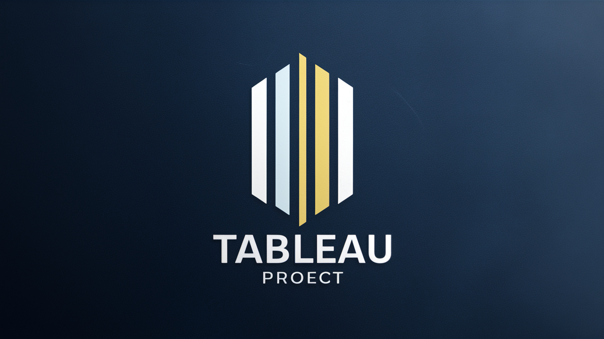

Data Cleaning in SQL
This project focuses on the critical aspect of data cleaning using SQL. Through this initiative, I tackled the complexities of ensuring data quality and integrity by employing SQL techniques. From identifying and handling missing values to resolving inconsistencies and outliers, this project delves into the meticulous process of preparing data for analysis. Through hands-on experience with SQL functions and queries, I gained insights into the pivotal role of data cleaning in driving accurate and reliable analyses.
Covid 19 Data Exploration
This project revolves around an in-depth exploration of COVID-19 data solely through SQL. By harnessing the power of SQL queries and database manipulation techniques, I delved into various facets of the pandemic, such as infection rates, mortality statistics, testing trends, and geographical patterns. Through the utilization of SQL functions, joins, and aggregations. This project not only provided a comprehensive understanding of the COVID-19 landscape but also honed my SQL skills in real-world data analysis scenarios.

This Tableau-driven project delves into Airbnb data, offering insights crucial for hosts and travelers. Through dynamic visualizations, it unveils pricing patterns, occupancy trends, and neighborhood preferences. Hosts gain actionable insights to optimize listings and pricing strategies, enhancing their competitiveness in the market. Travelers benefit from informed decision-making, aided by comprehensive neighborhood analyses and price comparisons. With Tableau's interactive dashboards, users explore spatial distribution maps.
Exploratory Data Analysis
In this project, we delve into exploratory data analysis (EDA) using the Pandas library in Python. EDA is a crucial step in understanding the characteristics and patterns within a dataset before diving into more advanced analyses or modeling.
Using real-world datasets, we explore various techniques and methods available in Pandas to gain insights into data distributions, relationships between variables, and potential outliers or anomalies. This involves summarizing data with descriptive statistics, visualizing distributions with histograms and box plots.
This project focuses on extracting product information from Jumia.co.ke, an e-commerce website, using web scraping techniques. By automating the data extraction process, we aim to gather valuable insights into product availability, prices, descriptions, and customer reviews. The project involves developing a web scraping script to collect the desired data, cleaning and preprocessing the scraped data to ensure accuracy, performing exploratory data analysis to uncover trends and patterns, creating visualizations to present key findings, and documenting the entire process